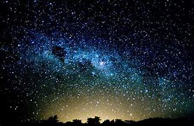
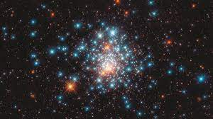
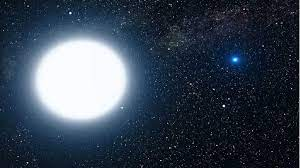
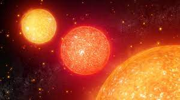

O que são estrelas?
As Estrelas são corpos celestes com luz própria. Elas são, na verdade, esferas gigantes compostas de gases que produzem reações nucleares de fusão, mas, graças à gravidade, podem se manter vivas (sem se explodir) por trilhões de anos.Assim, além de luz, elas emitem energia na forma de calor, que se propaga na forma de radiação pelo espaço.Só na nossa galáxia — a Via-Láctea — as estimativas apontam entre cem e quatrocentos bilhões de estrelas. O Sol, única estrela em nosso sistema planetário, é uma delas.
Como se formam as estrelas?
As nebulosas (nuvens formadas de poeira e gás) se contraem e formam uma esfera. Estas nuvens são formadas principalmente por hidrogênio e hélio. Ao se contrair devido à gravidade, o gás se concentra lentamente e aquece milhões de graus, num processo violento que pode levar milhões de anos.Assim, é formada uma protoestrela e, somente após atingir uma temperatura altíssima, têm início as reações nucleares das quais resultam as estrelas.Durante o processo de contração da nebulosa, o hidrogênio se funde, formando hélio. Essa reação libera enormes quantidades de energia.
Tipos de estrelas
As estrelas são classificadas principalmente por características como sua massa, brilho e temperatura
Estrelas Anãs Brancas
 São estrelas com calor residual, uma vez que já queimaram seu combustível nuclear. As anãs brancas são muito densas. Possuem uma massa próxima a do Sol, porém, com diâmetros similares à da Terra. À medida que esfriam, elas vão se tornando mais difíceis de se enxergar a olho nu. Antes desse estágio, porém, elas já passaram pela fase de estrela gigante vermelha.Estrelas Anãs Vermelhas

São o tipo mais numeroso no universo. Bem menores que o Sol, também emitem menos luz e calor.
As estrelas gigantes
As estrelas gigantes possuem raios entre dezenas e centenas de vezes maiores que o Sol. Há basicamente dois tipos de estrelas gigantes: as vermelhas e as azuis. As gigantes vermelhas são, na verdade, as mais frias, enquanto as azuis, mais quentes e muito mais massivas.
As estrelas de nêutrons

As estrelas de nêutrons possuem características bem particulares, como tamanhos bem menores que do Sol, com raios de até poucos quilômetros, mas com elevada massa. Estas estrelas também giram a velocidades altíssimas. Outra característica são os fortes campos elétrico e magnético.
sim
não talvez